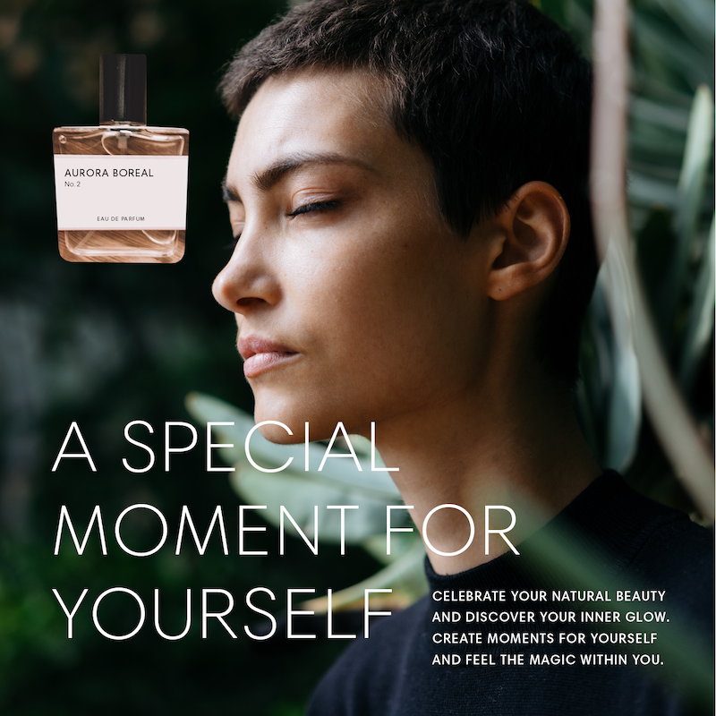

This ad is part of a research project
We are showing this ad as part of a research project at the university LMU Munich.
We are not selling an actual perfume.
We have not collected any personal data about you.

We can make assumptions about your personality solely based on your Facebook page likes. Your personality profile is solely based on the pages you have liked on Facebook. Scientific research suggests that liking specific Facebook pages is associated with personality traits, for example, people who are rather extroverted tend be interested in "Stargate", Computers or "Serenity". Apart from the pages you liked, you were also shown these ads because you live in the US, you are female, and between 18 and 35 years old. No other data was used. If you want to know how this works in more detail, learn more about it here. We do not sell any actual products and have not collected any data about you. Our goal is to inform people about how their data is used online and therefore raise transparency for advertising tailored to individual personality. In the future, it is likely that a lot of your personal information, e.g. demographics, how much you are posting, chatting, etc. will be used to compute even more detailed personality profiles. Advertisers can then use this information to show you only ads that probably appeal more to you due to your personality. There are a lot of different approaches to analysing people’s personality based on their online behavior.